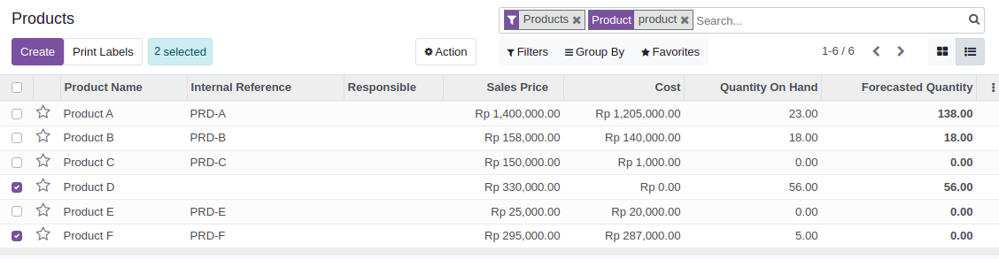
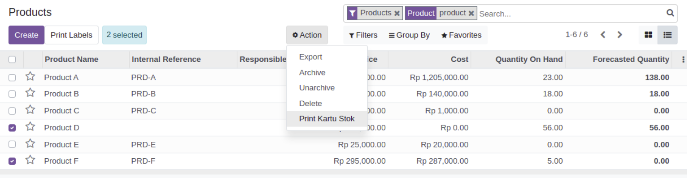
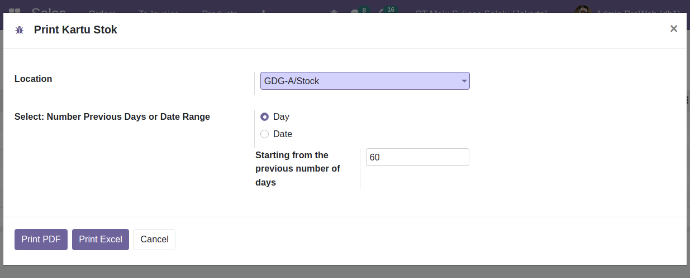
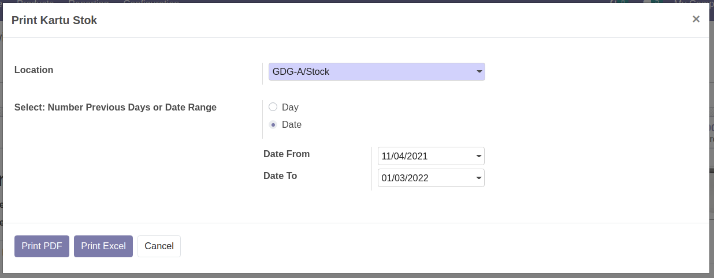
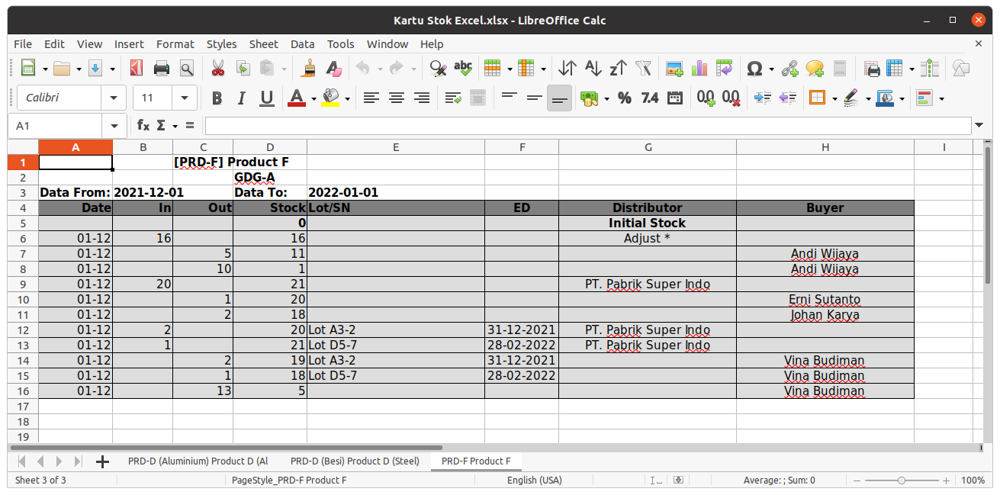

- Print Kartu Stok (Stock Card) of some Product / Product Variants on spesific Warehouse location
- Display Lots/Serial Number and Expired Date
- Show Specific Date Range
- Output Report in PDF or Excel (XLSX) file format
Go to Products / Product Variants menu then select some.
Click Action Button then click Print Kartu Stok.
Choose Warehouse location, then click Day or Date options.
3a. Starting from the previous number of days default number is 60 days.
3b. Date Range default is 60 days
- If the Date From is empty then the initial data is all the previous data.
- If the Date To is empty then the data ranges to the most recent data.
4a. Click Print PDF, then Kartu Stok (Stock Card) Report will appear in PDF format file.
4b. Click Print Excel, then Kartu Stok (Stock Card) Report will appear in Excel (XLSX) format file.
1. If PDF report does not appear in correct format, make sure Odoo has the correct web.base.url port parameter setting:
- Activate the developer mode
- Go to Settings, then click Technical menu: System Parameter
* Key: web.base.url
* Value: http://localhost:8069 (Default)
2. If you run this print report on Product lists, then the output report will show all product variant of that product.